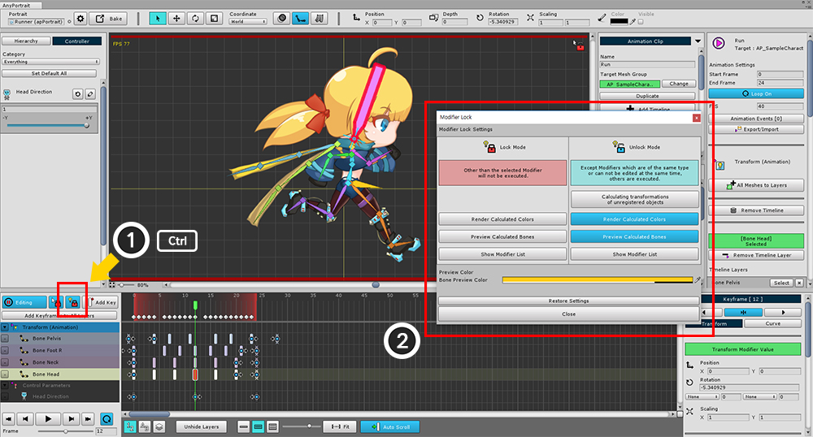
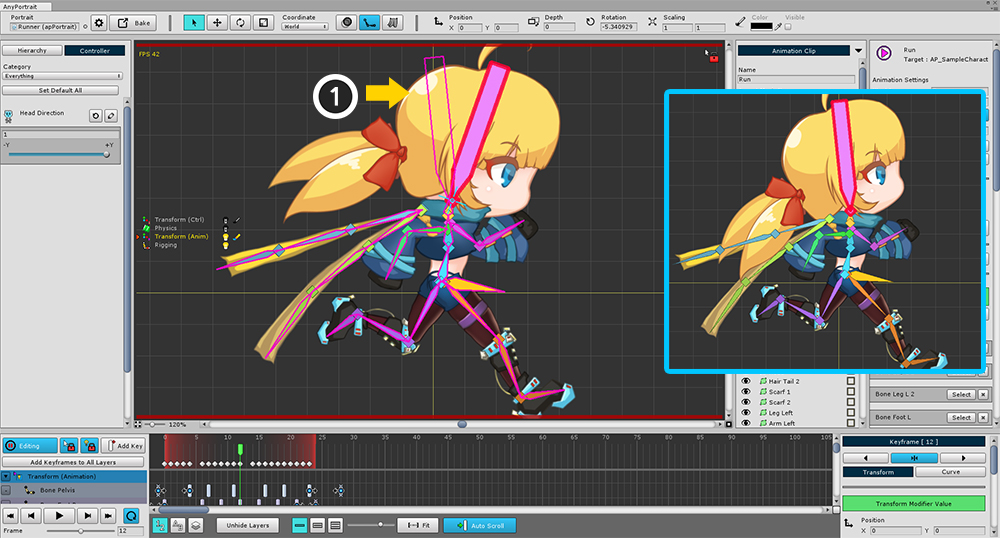

AnyPortrait > 메뉴얼 > 모디파이어 잠금 고급 설정
모디파이어 잠금 고급 설정
1.0.2
동시에 다수의 모디파이어를 등록해서 편집하는 것은 AnyPortrait의 특징입니다.
그렇지만 다수의 모디파이어를 동시에 수정하는 것은 많은 문제를 야기할 수 있습니다.
따라서 사용자가 작업을 할 경우에는 "1개의 모디파이어"만 수정할 수 있도록 제한하고 있습니다.
하지만 경우에 따라서 편집 도중에도 다수의 모디파이어를 실행할 수 있습니다.
이것을 제어하는 기능을 모디파이어 잠금(Modifier Lock)이라고 합니다.
이 페이지는 모디파이어 잠금 기능에 대해서 더 자세히 알아봅니다.

설명을 위해서 기존의 튜토리얼에 Transform (Controller) 모디파이어를 추가하였습니다.
이 모디파이어는 컨트롤 파라미터에 따라서 Head Bone과 Neck Bone을 움직입니다.

애니메이션에 컨트롤 파라미터 타임라인을 추가하였습니다.
컨트롤 파라미터를 이용하여 오른쪽 그림과 같이 고개를 들 수 있도록 하였습니다.

이제 평소와 같이 애니메이션을 편집해봅시다.
(1) 편집모드를 켜고, (2) Transform (Animation)의 키프레임을 선택하여 수정을 하고자 합니다.
이때 (3)과 같이 고개를 드는 처리는 무시되고, Transform (Animation) 모디파이어만 처리가 되는 것을 알 수 있습니다.
모디파이어 잠금 규칙에 따라서 편집 모드 상태에서는 다른 모디파이어들이 실행되지 않기 때문입니다.
모디파이어 잠금(Modifier Lock) 규칙
1. 잠겨진 상태일 때
- 선택된 모디파이어 외의 모든 모디파이어는 실행되지 않습니다.
- Rigging 모디파이어는 실행됩니다.
2. 풀려진 상태일 때
- 선택된 모디파이어와 동일하거나 동시에 편집될 수 없는 모디파이어를 제외한 나머지 모디파이어는 실행이 됩니다.
- 같은 Transform 계열의 모디파이어일 경우, 또는 같은 Morph 계열의 모디파이어인 경우가 이에 해당됩니다.
- Transform 계열의 모디파이어를 선택한 경우 Physics 모디파이어가 실행됩니다.
- Rigging 모디파이어는 실행됩니다.

모디파이어 잠금의 고급 설정창을 열어봅시다.
(1) Ctrl 을 누른 채로 모디파이어 잠금 버튼을 클릭합니다. (Mac OSX에서는 Command 입니다.)
(2) 모디파이어의 잠금/해제 상태의 설정을 정할 수 있는 고급 설정창이 나타납니다.

모디파이어의 고급 설정들입니다.
1. Lock Mode : 모디파이어 잠금이 된 상태의 설정입니다.
2. Unlock Mode : 모디파이어 잠금이 해제된 상태의 설정입니다.
3. Calculating transformations of unregistered objects :
현재 편집 중인 모디파이어에 등록되지 않은 객체는 "모디파이어 잠금 규칙"이 적용되지 않아도 됩니다.
이 설정을 켠다면 등록되지 않는 객체에 한해서 정상적인 모디파이어 계산이 진행됩니다.
4. Render Calculated Colors : 색상 속성에 한해서 "모디파이어 잠금 규칙"을 적용하지 않습니다.
5. Preview Calculated Bones : "모디파이어 잠금 규칙"이 적용되지 않는 경우의 본의 모습을 미리볼 수 있습니다.
6. Show Modifier List :
현재 처리 중인 모디파이어 리스트를 화면 좌측에 보여줍니다.
모디파이어의 계산 상태를 확인할 수 있습니다.
7. Bone Preview Color : "Preview Calculated Bones" 속성이 켜진 경우의 출력 색상입니다.
8. Restore Settings : 모든 설정값을 기본값으로 복원합니다.

모디파이어 잠금 설정을 변경했습니다.
여러분이 편리한 방식으로 설정하시면 되겠습니다.
설정은 자동으로 저장됩니다.

"Preview Calculated Bones" 설정을 활성화하면 본 외곽선이 추가로 출력됩니다.
컨트롤 파라미터의 제어를 받는 (1) Head Bone의 외곽선이 나타나므로,
오른쪽 이미지와 같이 나타날 최종 결과물을 예상하면서 작업할 수 있습니다.

"Show Modifier List" 설정을 활성화하면 화면 좌측에 모디파이어 리스트가 나타납니다.
모디파이어 스택의 순서대로 출력이 됩니다.
(1) 모디파이어의 아이콘과 이름입니다. 편집 중인 모디파이어는 좌측에 작은 커서와 함께 노란색의 글씨로 출력됩니다.
(2) 모디파이어의 계산 상태입니다.
모디파이어가 실행되어 객체의 연산에 적용되고 있다면 "불이 켜진 전구"의 아이콘이 나타납니다.
실행되지 않고 잠겨 있다면 "불이 꺼진 전구" 아이콘이 나타납니다.
일부의 객체에만 적용되고 있다면 "조금 밝은 전구" 아이콘이 나타납니다.
(3) 모디파이어가 메시 색상을 결정할 때, 색상 속성을 연산하는지 여부를 아이콘으로 보여줍니다.
잠겨진 경우엔 검은색 아이콘이 나타납니다.

모디파이어 잠금 버튼을 누르거나 D 를 눌러서 모디파이어 잠금 상태로 전환한 뒤의 모디파이어 리스트의 모습입니다.
선택 중인 Transform (Animation) 모디파이어를 제외한 나머지 모디파이어는 실행되지 않음을 볼 수 있습니다.
(Rigging 모디파이어는 동시에 실행이 되며, 모디파이어 잠금 설정에 따라 위 화면과 조금 다를 수 있습니다.)

애니메이션 뿐만 아니라 메시 그룹의 모디파이어 편집 상태에서도 동일하게 (1) Ctrl 을 누른 상태에서 버튼을 클릭하여 설정창을 호출할 수 있습니다.